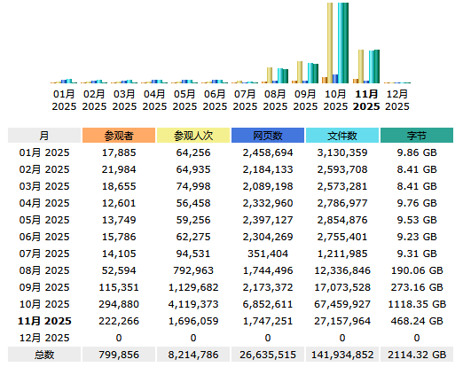

たたなこ🏳️⚧️🍥
@tatanakots
@chenshaoju 我们是不是可以试图访问某个使用了pcdn的网站，记录下网站会返回的所有pcdn节点的ip后提前屏蔽这些节点以达到提前预防的效果

陈少举 （🦣 @chenshaoju@acg.mn ）
@chenshaoju
不知道是不是个例，但是还是放在这里：
如果你的网站在从2025年7月31日开始，流量不正常，每天有大量的IP在不断的刷新你的网站首页，这事可能和PCDN滥用有关，类似的现象早已出现在BT网络：https://t.co/lZxuoTiLXu。
整理出了截至目前大部分有嫌疑的IP地址段，供参考：https://t.co/RcG5XvBjgg https://t.co/Gdpgi146Wg